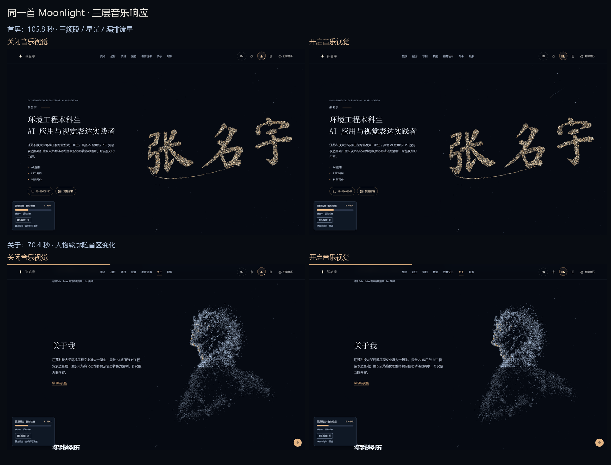

Moonlight · 三层音乐响应
这里嵌入的是当前网站。点击播放后，三条频段柱、星光与人物轮廓、曲目段落编排共用同一条音乐。
播放时间 0.00 秒当前段落 等待播放实际强弱 0.0000网页正在准备。
实时频段
音乐按钮的三条柱分别显示低、中、高频。暂停按钮按实际播放状态更新。
音频预分析
能量控制强弱，起音点亮单颗星；关于章节的人物轮廓按估计音区改变提亮高度。
手工时间编排
蓄势、展开、流星与尾声都按音乐播放时间定位，向后跳转也能对齐。
阅读作品与正文时降低视觉强度，流星让位于正文。暂停后平滑回落；开启减少动效时保留主动播放，视觉保持静态。音区是频谱重心估计，不代表精确音高。
同一片段、同一视角的开关对照
